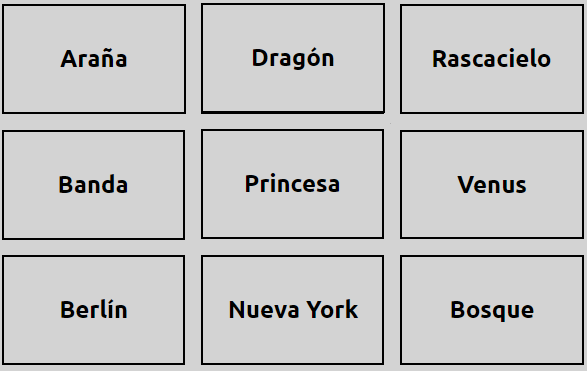

Son dos agencias de espionaje.
Cada agencia cuenta con un Lider y el resto serán Agentes de Campo.
En la pantalla apareceran 25 personajes con sus "Nombres en clave".
El objetivo es que los Agentes de Campo desvelen las identidades secretas de los Agentes en Cubierto de su equipo.
> Lo harán a través de codigos secretos que el Lider les irá diciendo.
Los Lideres saben las identidades secretas de los 25 personajes, pero sus compañeros de equipo (Agentes de Campo) sólo verán a las personas con su nombre en clave.
Y cuidado al desvelarlos porque entre ellos hay:
- Agentes de la agencia rival
- Civiles
- Un Asesino
Se separan en dos grupos (Equipo Rojo y Equipo Azul).
Uno de cada Equipo será elegido como Lider (unicamente por esa ronda).
Los Lideres se irán alternando para aportar pistas compuestas por una sola palabra.
Los Agentes intentarán luego adivinar a qué palabras se refiere su Lider. Y cuando un Agente toque una palabra, se revelará la identidad secreta.
> Si era uno de sus Agentes en Cubierto pueden seguir adivinando.
> Pero caso de fallar, le tocará el turno al otro Equipo.
Si un equipo se quedó sin ideas de cual pista vinculó su Lider, puede optar por "Pasar de Turno".
1) El Equipo ganará cuando logre contactar con TODOS sus Agentes en Cubierto.
2) Y si por accidente contactan al Asesino. Ese Equipo perderá.
Si sos el Lider tenes que pensar una pista de UNA SOLA palabra que se relacione con algunos de los nombres en clave que tu equipo intenta adivinar.
*** Si tenes una buena pista, decila en voz alta **
Acá debajo hay un Tablero de ejemplo:
Ejemplo con: DRAGÓN y PRINCESA.
Estas dos palabras son muy habituales en muchas historias, por eso podrías decir "CUENTO x2".
También podes decir "ALTEZA x1", pero es más divertido intentar abarcar dos o más palabras.
1) No podes referirte a las letras INICIALES.
Ejemplo: "B x3" para BANDA, BERLÍN y BOSQUE.
Tablero de ejemplo:
2) No podes dar una pista en referencia a las UBICACIONES donde estan los Agentes en Cubierto.
Ejemplo: "DERECHA x3" para RASCACIELO, VENUS y BOSQUE.
3) Las pistas deben ser en CASTELLANO, no podes utilizar "SPIDER" para ARAÑA y NUEVA YORK.
Pero si podes utilizar "SPIDER-MAN" (Porque es un personaje).
4) No podes decir la MITAD de una palabra compuesta.
Ejemplo: "RASCAR" o "CIELO", para RASCACIELO.
5) Se puede DELETREAR una pista para que no se preste a confusión.
Ejemplo: "ORCA/HORCA", o "BOTA/VOTA".
La idea original del juego es que el Lider se limite a hablar lo menos posible y sólo diga una palabra (osea, la PISTA).
No deberia decir la frase: "Esta pista es rebuscada, pero es GIGANTEZCO x2"
En lo posible, también debería evitarse el contacto visual entre el Lider y sus Agentes.
Esto es para mantener la escencia del juego.
A veces tendrán que decidir sobre la marcha qué es válido y qué no lo es. Cada grupo de juego puede tener distintas formas de verlo.
Una opción para cuando sos Lider y te toca decir una pista que no estás segur@ si es valida, es consultarlo previamente con el/la Lider rival para verificarla.